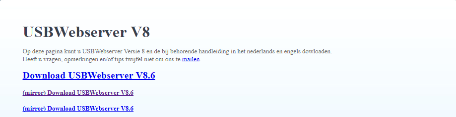
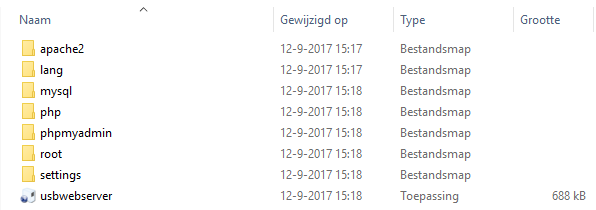
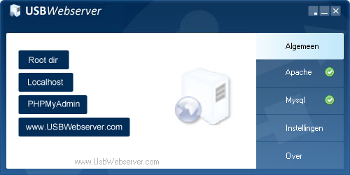

Wat is mySQL
MySQL is een programma waarmee je je eigen database kan maken.
]
Je kan het ook gebruiken om zelf informatie te filteren zodat het overzichtelijk.
Als je speciale tags wilt zoeken moet je een code invoeren om alles te filteren.
Hoe instaleer je MySQL
- Je gaat als eerst naar: USB-webserver
- Vervolgens klik je op de optie download rechts boven in en klik op een van deze dowload links (Je moet de mirror gebruiken als de eerste download link niet werkt).
 - Als je het hebt gedownload krijg je een zip-file, daarin staat al de software die je nodig hebt.
 - Maak een nieuwe map op je computer en kopieer de inhoud van de zip-file in de nieuwe file.
- Start daarna de toepassing usbwebserver en klik op uitvoeren.
- Kies dan als taal Nederlands en dan krijg je dit scherm te zien.
 - Zoals je ziet aan de groene vinkjes werken Apache en MySQL. Dit zijn de twee programmas om MySQL werkend te krijgen.
- Op dit punt kun je MySQL gebruiken